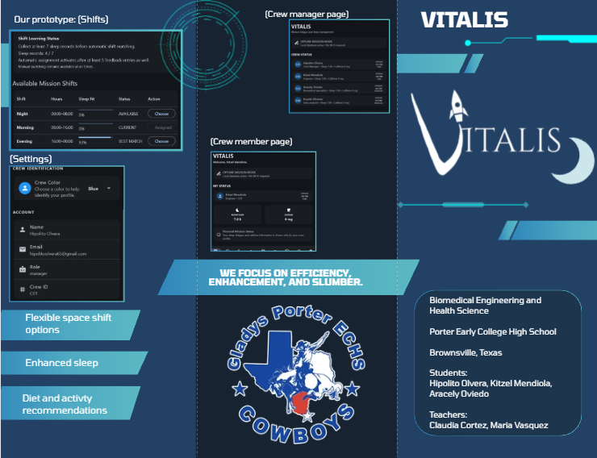
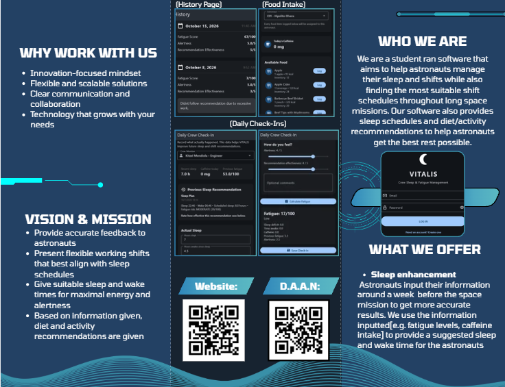

07 • Project Media
Videos, D.A.A.N., and Brochure
VITALIS Project Channel
Watch our VITALIS prototype demonstrations, testing, and project updates.
Open YouTube →Our Brochure

Brochure — Side 1

Brochure — Side 2
Watch our VITALIS prototype demonstrations, testing, and project updates.
Open YouTube →
Brochure — Side 1

Brochure — Side 2